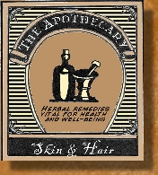

|
|


Yellow Dock- Supports the liver. Nettle- High in nutrients, minerals, and vitamins like Magnesium, Calcium, Potassium, Chlorophyll and the list goes on. Excellent for anemia and the Vit C content ensures iron absorption. Fenugreek-High in iron. Red Rasberries- Excellent for anemia, vitamins B1-3, is an antioxidant and also rich in nutrients and Vit C. Apple cider vinegar |

1 oz bottle $13.00 |
some of These pictures are of the actual herbs I use to make the tinctures, not the tinctures themselves. |



1 oz bottle $13.00 |
Fenugreek- Natural aphrodesiac Damiana- Mild stimulant and can cause tingling. With men, helps with impotence and infertility. In women, it helps with menapausal side effects. Gingko- Boosts blood flow to genitals. Ginseng- Helps with erectile dysfunction. Cayenne- Increases blood flow to the genitals. Kava Kava- Relaxing, causes tingling and more pleasure during sex. Maca- Increases energy, stamina, endurance, treats male impotence and sterility. Apple cider vinegar |
This tincture improves sexual function, gives greater libido, more frequent intercourse, increased likelihood of orgasm, more intense orgasm, and greater sexual satisfaction. Dosage: 3x6 droppers per day |
1 oz bottle $13.00 |
Lemon Balm- Helps with depression Skullcap- Anxiety, depression, insomnia Valerian Rt.- Anxiety, nervous tension, insomnia Feverfew- Depression Damiana- Depression, lethargy, also stimulating and relaxing at the same time. Chamomile- Insomnia, anxiety, calming St. Johns Wort- Depression Apple Cider Vinegar |
**Not reccommended to drive while taking this tincture as may cause drowsiness and also if you are pregnant.** |
1 oz bottle $13.00 |
Marshmallow- Coughs, sore throats, immune booster. Thyme- Antibacterial, expectorant, eases bronchitis, colds, and flus. Coltsfoot- Lung conditions, colds Rosehips- High in Vit C, antioxidants, immune booster. Garlic- Fever reducer, natural antibiotic, coughs & colds. Mullein- Tight coughs, bronchitis Echinacea- Sore throat, cough, fever reducer, immune booster. Cayenne-Antibacterial, Vit C, colds, wards off chills. Yarrow- Anti-inflammatory, induces sweat, fever reducer. Licorice- Anti-inflammatory, sore throat, expectorant, fever reducer Apple Cider Vinegar- Iron, Vitamin C, Vitamin E, Vitamin A, Vitamin B1 & B2, Vitamin B6, Provitamin beta-carotene, Vitamin P |
Like our bottles say, "This stuff is so good, you will want to get sick, just so you can have some!" This tincture has warded off many-a-cold and flus for me. And if you do happen to get sick, you wont be for very long with this stuff. Dosage: 3x6 droppers per day and as needed at the onset of a cold. |
These tinctures are not intended as a cure and are not FDA approved. Please consult a doctor before use. All herbs are organic or wildcrafted when available. Thank you! |
** Do not use if you are pregnant ** |
** Do not use if you are pregnant ** |
1 oz bottle $13.00 |
Milk Thistle- Protects the liver and stimulates new liver cell growth. Dandelion root- High in vitamins and minerals, supports and is restorative to the liver. Burdock root- Supports the liver Yellow Dock- Supports the liver, peps up a sluggish liver, stimulates the release of bile. Apple cider vinegar |
This tincture is essentially a liver detox and support blend. A large part of skin and hair ailments are due to poor diet, toxicity, and an overburdened liver. By helping the liver do it's job more easily, and eliminating toxins the right way, your skin and hair becomes a lot more healthy! |